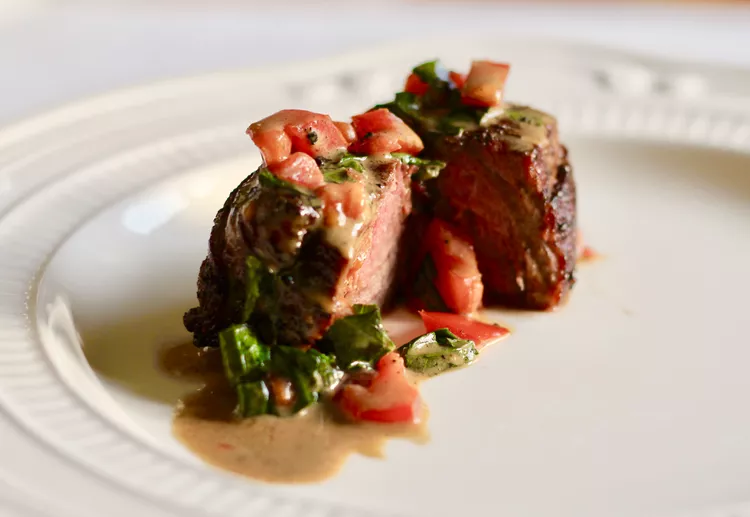

Home
Beef Tenderloin Filets

Beef tenderloin filets—Simple. Elegant. Delicious. Great recipe for very special occasions. I serve with garlic mashed potatoes (or sometimes wild rice), green beans with cherry tomatoes (recipe on this site), green salad with sweet poppy seed dressing (my published recipe on this site), and homemade sweet dinner rolls (recipe on this site). Enjoy!
Ingredients
- 8 1-inch-thick beef tenderloin steaks
- salt and ground black pepper to taste
- 3 tablespoons unsalted butter
- ½ cup dry red wine
- 1 cup heavy whipping cream
- ½ cup beef stock
- 1 cup chopped tomatoes
- ½ cup chopped fresh basil
Steps
- Pat meat dry; season with salt and black pepper.
- Melt butter in a heavy skillet over medium heat.
- Add filets; cook to desired doneness, 4 to 5 minutes for medium.
- Transfer filets to a serving plate; pour off fat from skillet.
- Add wine to skillet; bring to a boil, scraping any browned bits from bottom of skillet.
- Stir in cream and stock; boil sauce until thickened, 3 to 5 minutes.
- Off heat, stir in tomatoes and basil until combined.
- Serve filets with sauce.